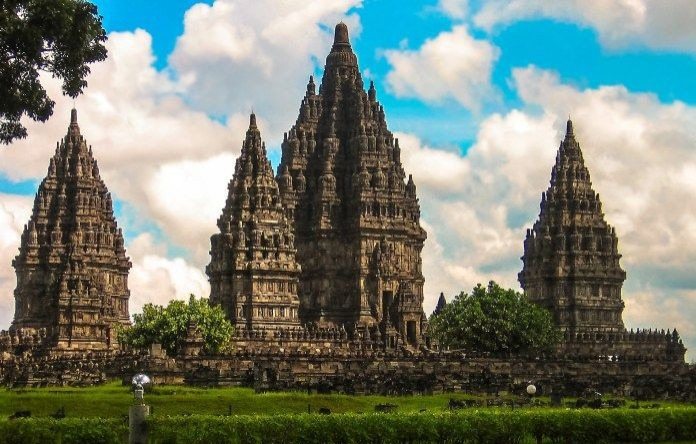
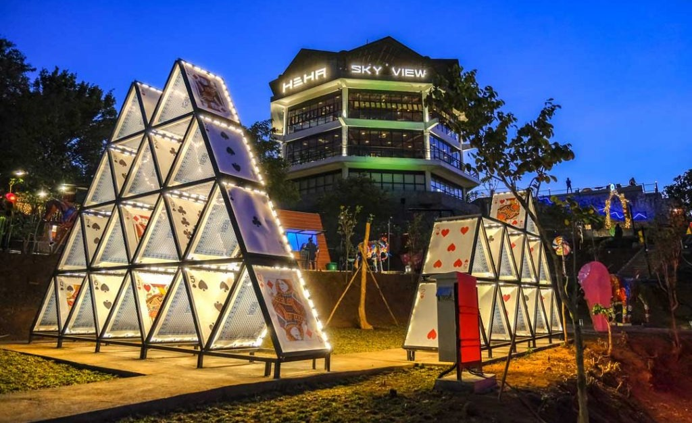
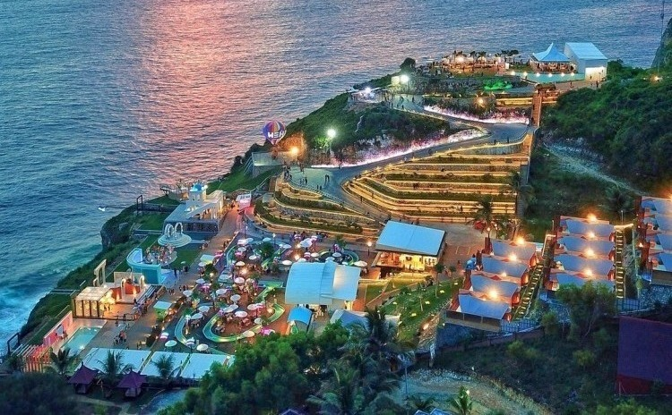
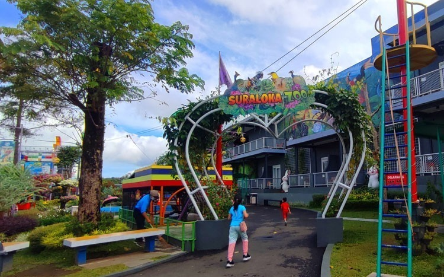
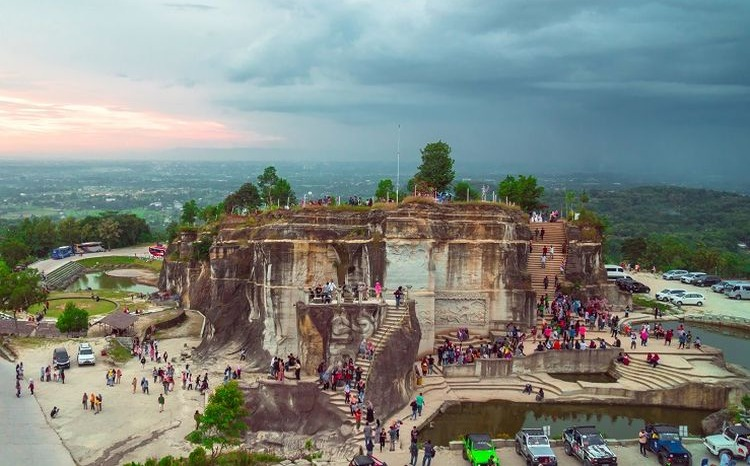

Sejarah Candi Prambanan
Candi Prambanan adalah candi Hindu terbesar di Indonesia sekaligus salah satu candi yang terindah di Asia Tenggara. Menurut prasasti Siwagrha, candi ini mulai dibangun pada masa pemerintahan Rakai Pikatan (pertengahan abad ke-9) dari Kerajaan Mataram Kuno. Namun, oleh sebab yang masih misterius, pusat kerajaan pindah ke Jawa Timur di akhir abad ke-10. Candi yang megah ini pun terbengkalai dan sebagian tertimbun material letusan Gunung Merapi. Perlahan-lahan, wilayah Prambanan menjadi hutan lebat. Beratus-ratus tahun kemudian barulah reruntuhan candi ini ditemukan kembali. Pada saat itu belum diketahui sejarah candi ini sehingga terciptalah legenda Roro Jonggrang yang diceritakan turun temurun. Upaya pemugaran candi secara serius dimulai sejak 1930-an dan pemugaran candi utama baru rampung tahun 1953.
Hutan Pinus Mangunan

Hutan Pinus Mangunan merupakan daya tarik wisata alam yang berada di perbukitan Bantul sisi sebelah timur. Pada mulanya hutan pinus ini hanyalah wilayah hutan yang dikelola oleh Perhutani. Namun keberadaannya mulai dikenal sejak bermunculan tentang foto-foto keindahan hutan pinus tersebut. Deretan pohon pinus yang tumbuh dengan rapi membuat pengunjung tertarik untuk mengunjunginya dan perlahan-lahan dibuka menjadi kawasan wisata oleh masyarakat sekitar. Hutan Pinus Mangunan memiliki suasana yang dapat membuat pengunjung merasa damai, sangat asri, masih alami, serta dapat membuat hati tenang. Terdapat banyak deretan pohon pinus yang tumbuh subur di sepanjang hutan tersebut.
Heha Sky View
Salah satu destinasi wisata favorit yang menawarkan pemandangan terbaik kota Yogyakarta “dari lantai 2”. Terletak di kawasan perbukitan Gunungkidul. HeHa Sky View juga menyediakan restoran berkonsep modern dengan menu yang lezat dan berbagai food stall yang bisa menjadi alternatif untuk mencicipi aneka jenis kuliner. Jangan lupa untuk mengabadikan momen di beragam spot foto yang cantik untuk selfie atau foto bersama. Sesuai untuk wisatawan yang datang bersama anak kecil atau orang tua karena tidak perlu berjalan kaki terlalu jauh. Masih ada orang yang tidak bisa membedakan HeHa Sky View dan HeHa Ocean View. Padahal, HeHa Ocean View menawarkan pemandangan laut sedangkan HeHa Sky View menawarkan pemandangan langit di atas Kota Jogja.
Heha Ocean View
HeHa Ocean View adalah salah satu obyek wisata populer di Kabupaten Gunung Kidul, Daerah Istimewa Yogyakarta. Tempat wisata ini menawarkan pemandangan laut selatan dari tepi tebing.HeHa Ocean View menyediakan spot foto Instagramable bagi pengunjung. Ada sekitar 11 spot foto di HeHa Ocean View dengan pemandangan laut selatan. Selain foto di spot foto Instagramable, wisatawan bisa duduk santai di area taman dan kolam sambil menikmati penampilan live music.Selain area kuliner, HeHa Ocean View juga mempunyai fasilitas lainnya, antara lain musala, toilet, taman, panggung musik, dan area parkir. HeHa Ocean View juga memiliki fasilitas glamour camping (glamping). Wisatawan yang menginap di glamping HeHa Ocean View bisa menikmati pemandangan laut selatan saat bangun tidur.
Suraloka Zoo
Suraloka Zoo ini adalah kebun binatang di Yogyakarta yang belum lama ini dibuka. Tentunya Suraloka Zoo ini cocok buat destinasi wisata keluarga. Karena di Suraloka Zoo ini anak-anak bisa mempelajari tentang hewan. Suraloka Zoo berlokasi di daerah kaki Gunung Merapi, tepatnya di Jalan Boyong Nomor 97, Kaliurang, Hargobinangun, Pakem, Sleman, Yogyakarta. Selain bertemu dan berinteraksi dengan satwa, ada sejumlah aktivitas lain yang bisa dilakukan termasuk permainan outdoor. Banyak wahana seperti flying fox, high rope, menjaring ikan, indoor playground, naik kuda, ada dua jenis kuda yang bisa dinaiki. Dua jenis kuda tersebut adalah Kuda Poni dan Kuda Sandel, dengan tarif menunggang yang berbeda. Naik Kuda Poni dibanderol dengan harga RP. 50.000, sedangkan Kuda Sadel hanya RP. 30.000.
Tebing Breksi
Tebing Breksi merupakan tempat wisata yang berada di wilayah Kabupaten Sleman. Lokasinya berada di sebelah selatan Candi Prambanan. Lokasi Wisata Tebing Breksi tepatnya berada di Desa Sambirejo, Prambanan, Kabupaten Sleman, Daerah Istimewa Yogyakarta. Taman wisata Tebing Breksi adalah sebuah tempat wisata alam di Jogja. Sesuai dengan namanya, tempat wisata ini merupakan perbukitan batuan breksi. Tebing batuan breksi yang memiliki corak yang indah menjadi daya tarik tersendiri bagi wisatawan. Sebelum menjadi tempat wisata, lokasi Taman Tebing Breksi sebelumnya adalah tempat penambangan batuan alam. Kegiatan penambangan ini dilakukan oleh masyarakat sekitar. Di sekitar lokasi penambangan terdapat tempat-tempat pemotongan batuan hasil penambangan untuk dijadikan bahan dekorasi bangunan.